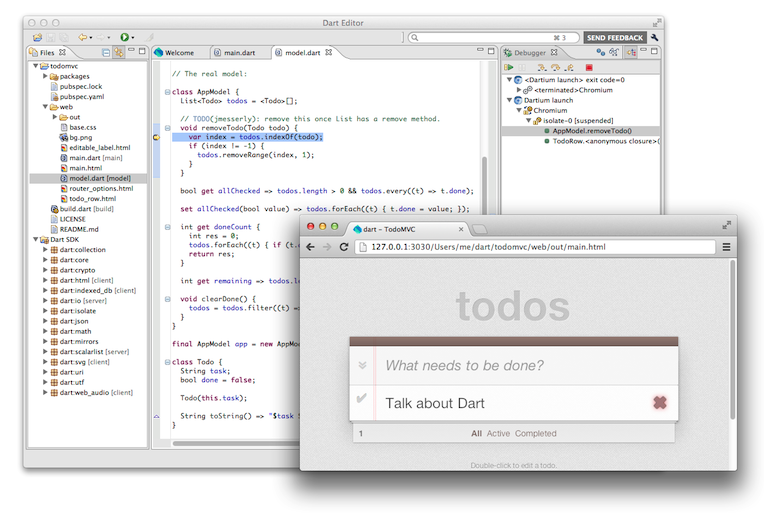

Dart helps developers productively build
high-performance apps for the modern web.
Targeting modern desktop and mobile browsers,
Dart apps can run natively in a Dart virtual machine (VM)
or be compiled to JavaScript.
Developed with the goals of simplicity,
efficiency, and scalability,
the Dart language combines powerful new features
with familiar language constructs into a clear, readable syntax.
But Dart's not just a language.
The Dart open-source project also includes libraries,
a package manager,
and tools such as a full-featured editor.
The bundled Dart libraries are still changing,
but we expect them to settle down soon.
Additional Dart open-source projects and the Pub package manager
help developers be even more productive.
For example, developers can use Pub to get packages for
JavaScript interoperability,
a web UI framework,
a unit testing library,
libraries for game development,
and much more.
Now that the language has stabilized,
the Dart team is working on performance.
The Dart VM is already much faster than Chrome’s JavaScript engine, V8,
on two important benchmarks.
See the performance page
for the latest measurements of Dart and JavaScript code.
The following design goals guide
the continued evolution and refinement of this project:
Create a structured yet flexible
programming language for the web.
Make Dart feel familiar and natural to programmers
and thus easy to learn.
Ensure that all Dart language constructs allow
high performance and
fast application startup.
Make Dart appropriate for the
full range of devices on the web—including
phones, tablets, laptops, and servers.
Provide tools that make Dart run fast across
all major modern browsers.
These design goals address the following problems
currently facing web developers:
Small scripts often evolve into
large web applications with no apparent structure—they’re
hard to debug and difficult to maintain.
In addition, these monolithic apps can’t be split up
so that different teams can work on them independently.
It’s difficult to be productive
when a web application gets large.
In scripting languages, the contracts with other parts of an application
are usually conveyed in comments rather than in the language structure itself.
As a result, it can be difficult for someone other than the author
to read and maintain a particular piece of code.
Before Dart,
the developer was forced to make a choice between
static and dynamic languages.
Traditional static languages require heavyweight toolchains
and a coding style that can feel inflexible and overly constrained.
Developers have not been able to create homogeneous systems
that encompass both client and server,
except for a few cases such as Node.js and Google Web Toolkit (GWT).
Different languages and formats entail context switches
that are cumbersome and add complexity to the coding process.
Language features
Key features of the Dart language include
classes, optional types, lexical scoping, libraries, isolates, and toolability.
Although Dart is designed to be familiar,
we took the opportunity to fix
some problematic features of common languages.
We also introduced a few good features from lesser known languages.
Some Dart features you might not expect include
top-level functions,
optional parameters,
string interpolation,
multi-line strings,
dynamic method handling (noSuchMethod),
a cascade operator (..), and
a function shorthand syntax (=>).
Details are in the
language tour.
Classes
Classes provide a well understood mechanism
for efficiently defining APIs.
Each class implicitly defines an interface.
Together, classes and interfaces
enable encapsulation and reuse of methods and data.
Optional types
Optional types can help a Dart program scale from a quick prototype
into a complex, modular application.
While a small program or prototype might not have type annotations,
you always have the option of adding them.
Types make the code's intent clearer,
which helps developers to understand the code.
Types also enable more powerful tools
for writing and debugging code.
Lexical scoping
Scoping rules in Dart make sense.
Each identifier is scoped to the block it's declared in,
which means that you can tell a variable's scope
by looking at the braces in your code {...}.
Even in a closure within a loop,
the value of a variable is what you intuitively expect.
Libraries
Developers can create and use libraries
that are guaranteed not to change during runtime.
Independently developed pieces of code can therefore
rely on shared libraries.
Isolates
Modern web browsers, even on mobile platforms,
run on multi-core CPUs.
To take advantage of all those cores,
developers traditionally use shared-memory threads running concurrently.
However, shared-state concurrency is error prone
and can lead to complicated code.
Instead of threads, all Dart code runs inside of isolates.
Each isolate has its own memory heap,
ensuring that no isolate’s state is accessible from any other isolate.
Toolability
Dart is designed to work well with tools.
A rich set of execution environments, libraries, and development tools
have already been built to support the language.
Dart's toolability enables productive and dynamic development,
including edit-and-continue debugging and beyond—up
to a style where you program an application outline, run it,
and fill in the blanks as you run.
Examples of Dart code
Here are some code snippets
to give you a feel for what Dart code looks like.
Using classes
Dart’s classes provide
a set of reusable and extensible building blocks.
A class defines methods and data
and can provide method implementations.
Every object is an instance of a class.
Each class implicitly defines an interface.
A class can implement multiple interfaces,
but it only extends—inherits implementation from—a
single superclass.
The following example shows the code for three classes.
The first class, Shape, is an abstract class—a
class that can't be instantiated.
The second class, Rectangle,
implements the interface defined by Shape.
The third class, Square, is a subclass of Rectangle.
{% prettify dart %}
abstract class Shape {
num perimeter();
}
class Rectangle implements Shape {
final num height, width;
Rectangle(this.height, this.width); // Compact constructor syntax.
num perimeter() => 2*height + 2*width; // Function shorthand syntax.
}
class Square extends Rectangle {
Square(num size) : super(size, size);
}
{% endprettify %}
Adding types
Dart provides, at the programmer’s option,
a mixture of static and dynamic checking.
When experimenting,
the programmer can write untyped code for simple prototyping.
As the application becomes larger and more stable,
types can be added to aid debugging and impose structure.
For example, here is a sample of simple, untyped code in Dart.
Here is what this code looks like with a few types added
to make the API clearer.
{% prettify dart %}
num recalculate(Point origin, num offset, {bool estimate:false}) {
// ...
}
{% endprettify %}
Besides adding types, the second sample
refines the API by making the third parameter optional
and giving it a default value.
Writing web apps
Dart code can be compiled to JavaScript
that runs in any modern browser.
Dart code can also run directly in browsers that have a Dart VM,
including Dartium and eventually Chrome.
Here's an example of an HTML file that loads Dart code:
{% prettify html %}
Simple Dart Web App
Simple Dart Web App
{% endprettify %}
The first <script> tag in this example
loads the code from app.dart.
If the browser has an embedded Dart VM,
then the browser loads Dart code,
which has the MIME type application/dart.
Otherwise, the browser loads the code's JavaScript equivalent,
thanks to the dart.js script
in the second <script> tag.
The main() function's call to query()
returns the HTML element that has the ID "button-text".
The code then uses the cascade operator (..)
to perform multiple operations on that element.
The first operation initializes
the element's text property,
and the second adds an event handler to the element.
Libraries and frameworks will
ease the task of developing sophisticated web apps.
For example, the libraries and tools in the
Web UI
package provide web components, templates, data binding,
and encapsulation.
Just to give you a taste of the Web UI package,
here's an example of one-way data binding in an HTML file:
{% prettify html %}
{% raw %}
The current time is: {{currentTime}}
{% endraw %}
{% endprettify %}
In the rendered page,
{{'{{'}}currentTime}} is replaced by
the value of the top-level currentTime variable
from the following Dart code:
{% prettify dart %}
String currentTime;
void main() {
var today = new DateTime.now();
currentTime = formatTime(today.hour, today.minute, today.second);
}
// ...The formatTime() function and any other code goes here...
{% endprettify %}
Tools
The Dart language is accompanied by a set of tools
to aid rapid prototyping, coding, and debugging
for the entire development cycle.
Offerings include:
Dart Editor: A Dart-savvy editor that supports creating, modifying, running, and debugging Dart apps
Pub: A package manager that features libraries published on pub.dartlang.org
dart2js: The Dart-to-JavaScript compiler
dart: The Dart VM
Dartium: Chromium with an embedded Dart VM
Dart code execution
On the client side, you can deploy Dart apps in two ways.
For browsers without an embedded Dart VM,
you can compile the Dart code to JavaScript,
using the dart2js compiler.
This compiler generates ECMAScript5-compatible
JavaScript from the Dart code.
This JavaScript code works in the latest versions of
Chrome, Safari, and Firefox,
plus IE9+, mobile Safari, and Chrome for Android.
Dart code can run directly in browsers
that have a Dart VM,
including Dartium and eventually Chrome.
On the server side, the Dart code runs directly on the command line,
using the dart tool,
for fast iteration and for cloud-based tasks.
Dart Editor
Dart Editor is based on Eclipse components,
but it has a simplified user interface.
Features of Dart Editor include:
Easy launching of both web apps and command-line apps
Interactive debugging of both web apps (with Dartium)
and command-line apps
Static analysis to catch errors and potential problems
Code completion
Code navigation
Refactoring
Auto-update of the editor, SDK, and Dartium
Code update help for breaking changes
to the language and bundled libraries
The following screenshot shows
Dart Editor being used to debug a web app.

To get the tools and find more information, go to
Tools for Dart.
The Pub package manager
Pub is a package mananger for Dart.
It helps developers reuse existing Dart code
and bundle Dart apps and libraries
for reuse and sharing with other people.
Pub handles versioning and dependency management.
You can use Pub either at the command line
or through Dart Editor.
Because Pub is part of the SDK,
it's updated whenever Dart Editor or the SDK is updated.
Dart provides several libraries
to support web and web server development.
The
library tour
and the
API reference
have details on all the bundled Dart libraries.
Bundled libraries include the following (and more):
The interface to the HTML5 DOM,
loosely based on the proposed HTML5 standard
as specified by the W3C/WHATWG.
This library is evolving in parallel with
the HTML5 standards.
![Dart source -> either [Dart VM] or [dart2js -> JavaScript source -> Browser (JavaScript Engine)]](images/source-flow.png)